Flood Resilience grant — the six-step application — 13 screenshots
Every screenshot this task has committed, with the numbers the audit ran on it.
These are the same files the gallery thumbnail is taken from. Generated by
tools/shotsindex.mjs from tools/work/shoot/08-form.json, the report the last complete
node tools/shoot.mjs 08-form run wrote. Edit the manifest, not this page.
the task · the gallery
step1 — index.html at 1180 px viewport, 283 KB.
console0contrast0unnamed controls0img without alt0landmarks header+main+footer+nav
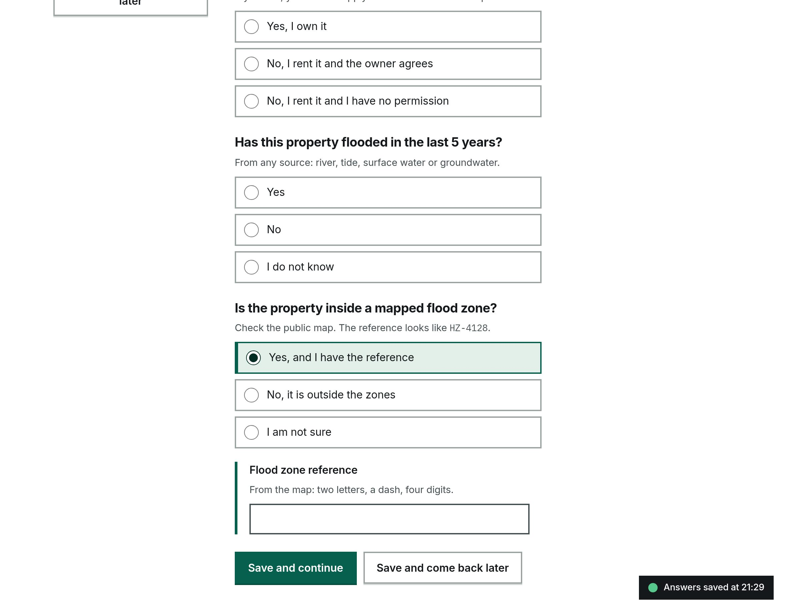
revealed — index.html at 1180 px viewport, 162 KB.
console0contrast0unnamed controls0img without alt0landmarks header+main+footer+nav
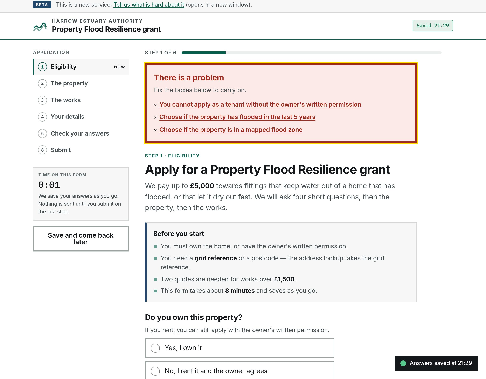
blocked — index.html at 1180 px viewport, 297 KB.
console0contrast0unnamed controls0img without alt0landmarks header+main+footer+nav
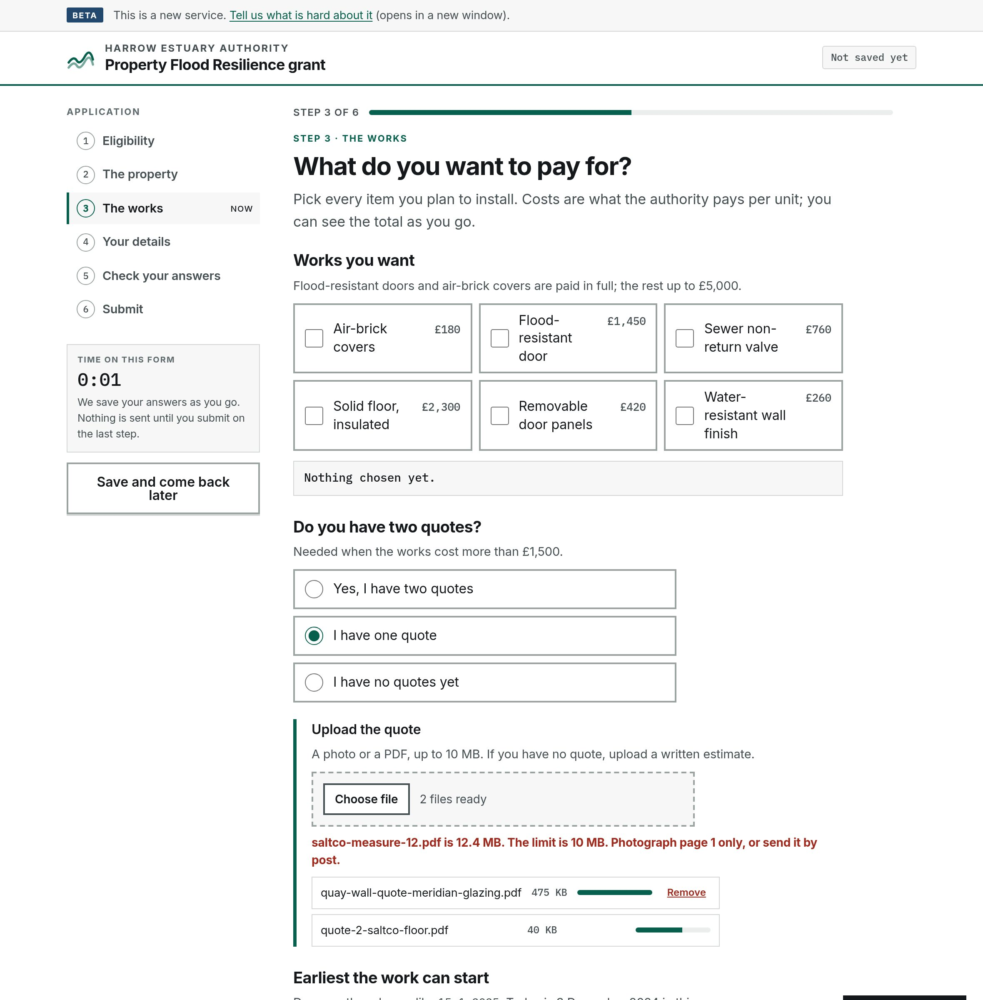
works — index.html?demo=file&go=works at 1180 px viewport, 307 KB.
console0contrast0unnamed controls0img without alt0landmarks header+main+footer+nav
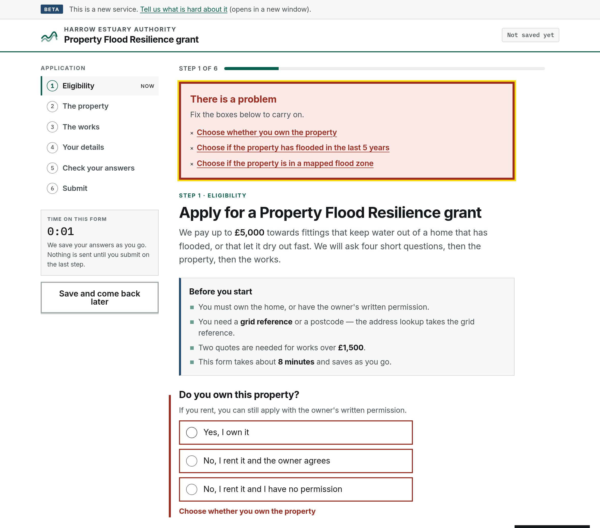
errors — index.html at 1180 px viewport, 312 KB.
console0contrast0unnamed controls0img without alt0landmarks header+main+footer+nav
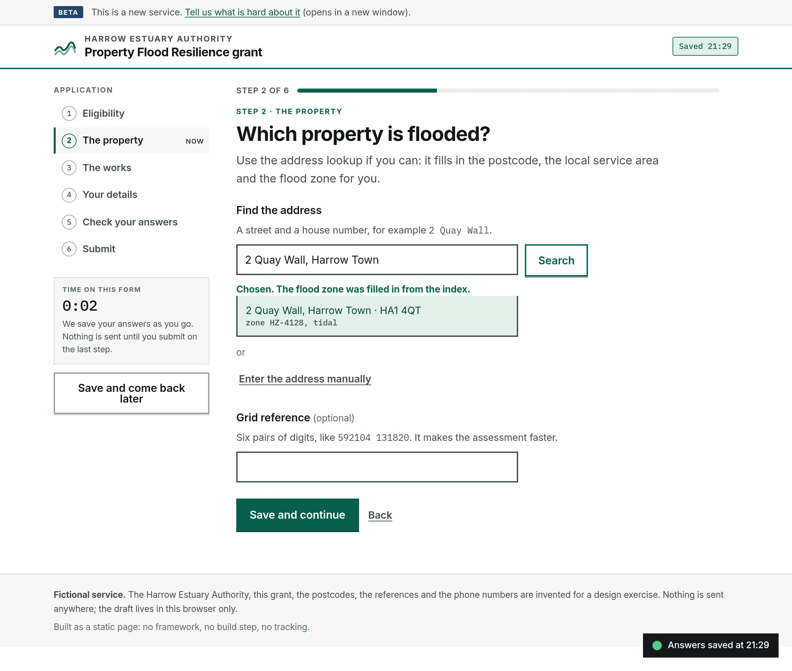
lookup — index.html?go=property at 1180 px viewport, 251 KB.
console0contrast0unnamed controls0img without alt0landmarks header+main+footer+nav
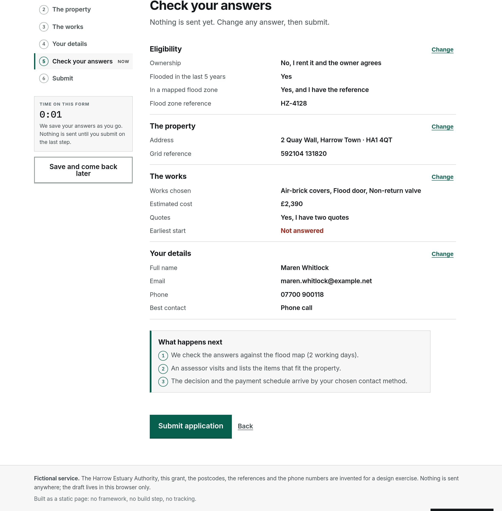
review — index.html?demo=fill&go=review at 1180 px viewport, 271 KB.
console0contrast0unnamed controls0img without alt0landmarks header+main+footer+nav
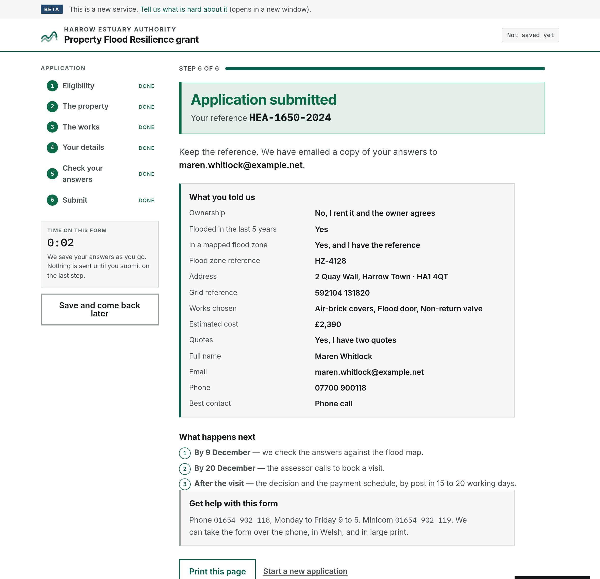
submitted — index.html?demo=fill&go=review at 1180 px viewport, 315 KB.
console0contrast0unnamed controls0img without alt0landmarks header+main+footer+nav
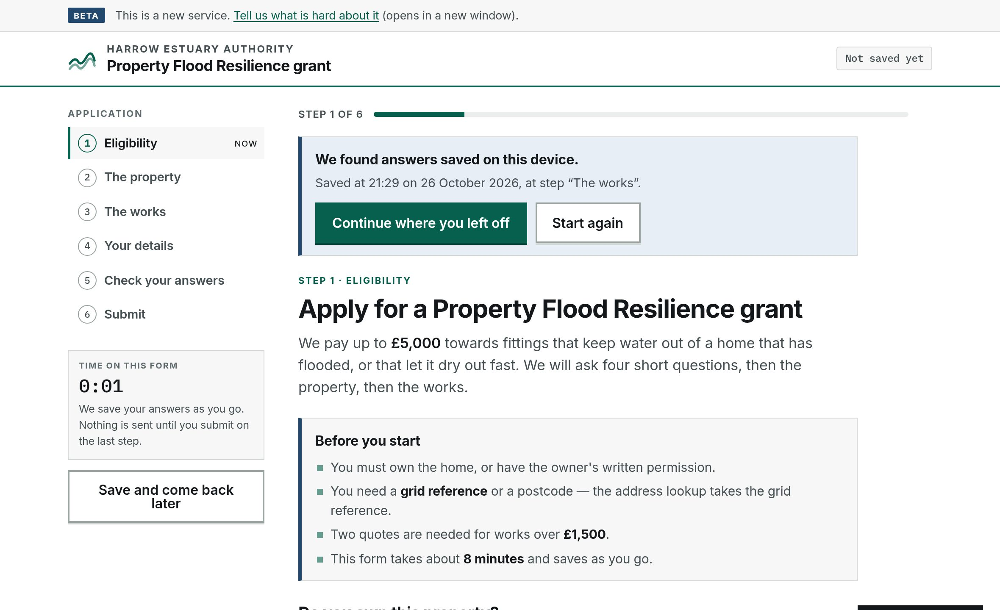
draft — index.html at 1180 px viewport, 232 KB.
console0contrast0unnamed controls0img without alt0landmarks header+main+footer+nav
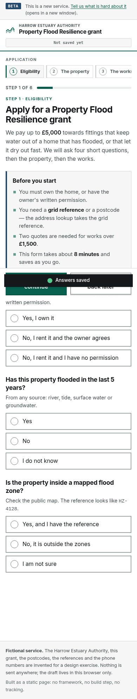
phone — index.html at 390 px viewport, whole page, 114 KB.
console0contrast0unnamed controls0img without alt0landmarks header+main+footer+nav
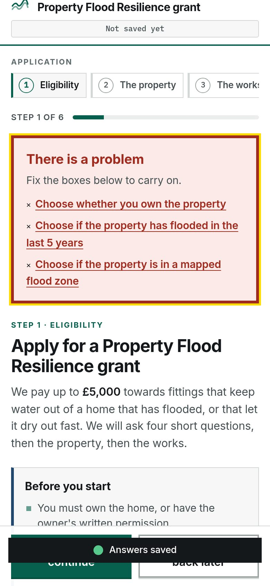
phone-errors — index.html at 390 px viewport, 146 KB.
console0contrast0unnamed controls0img without alt0landmarks header+main+footer+nav
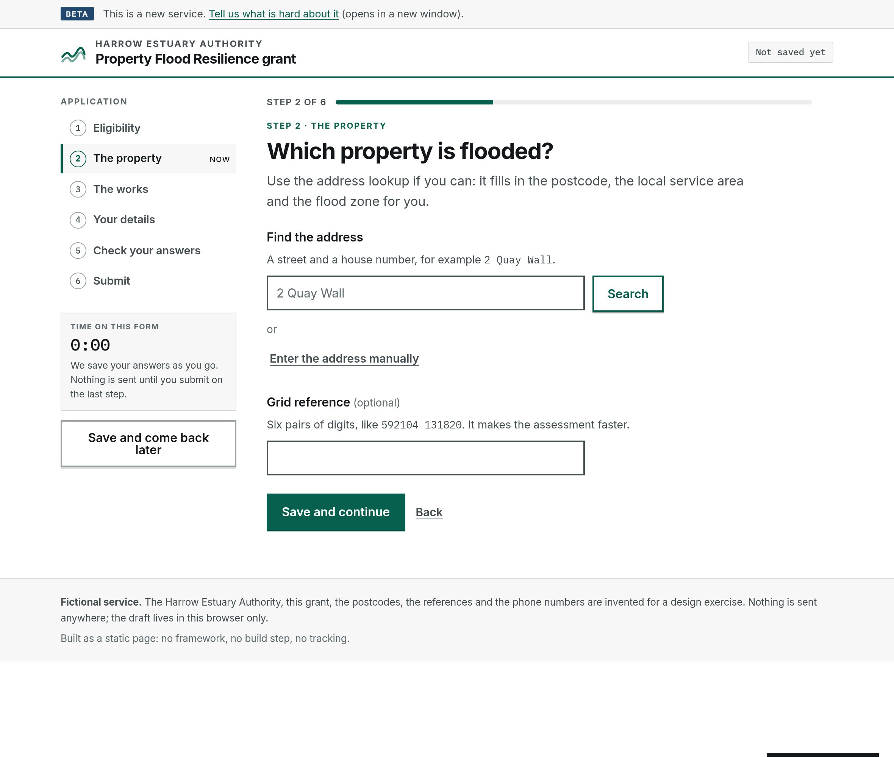
property — index.html?go=property at 1180 px viewport, 223 KB.
console0contrast0unnamed controls0img without alt0landmarks header+main+footer+nav
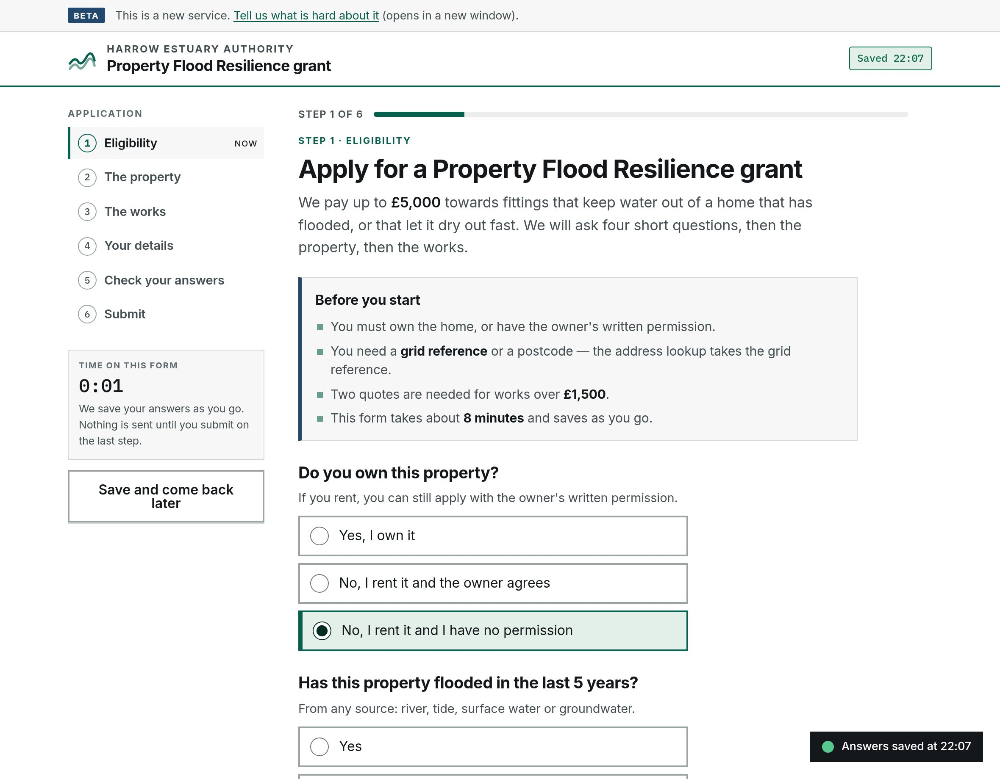
stop — — at ? px viewport, 277 KB.
console?contrast?unnamed controls?img without alt?landmarks —